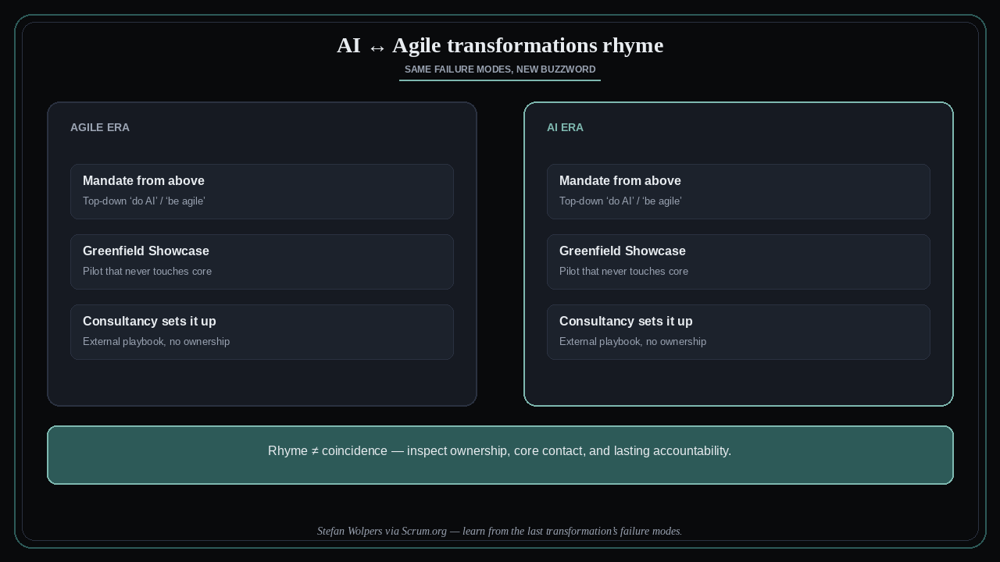

AI transformations rhyme with Agile ones
Source: Scrum.org (@Scrumdotorg) · Stefan Wolpers
original post
What it claims
AI transformations and Agile transformations rhyme. The familiar failure modes return under a new label: mandate from above, the Greenfield Showcase that never touches the core, and the consultancy that “sets it up for you.” Same pattern, new buzzword — so inspect ownership and contact with real work, not the slide deck.
Why it matters for a PO
POs will be asked to “do AI” the way they were once asked to “do Agile.” If the answer is a showcase pilot and an external playbook with no lasting ownership on the Product Backlog and DoD, you are replaying the last transformation’s theater. Scrum accountability (PO, team, empiricism) is the antidote — not another mandate.
3 takeaways
- Mandate / Showcase / Consultancy — name the rhyme when you see it.
- Greenfield demos that never touch the core product are not transformation.
- Ask who owns lasting change on the Product Backlog and Definition of Done.
Practice this week
For any AI initiative touching your product, write three lines: who mandated it, what contacts the live Product Backlog (not a side demo), and who owns the outcome after the consultants leave. If any line is empty, raise it in the next Sprint Review as an empiricism gap — not as resistance.